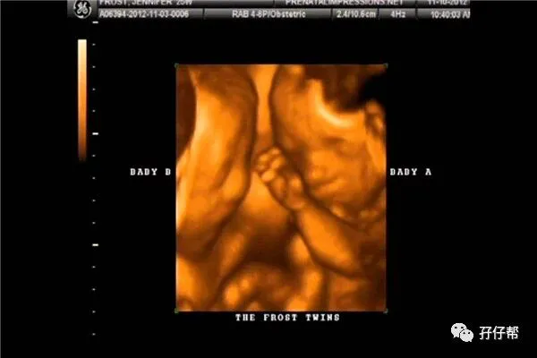
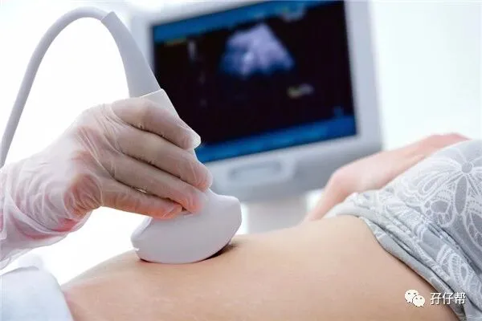
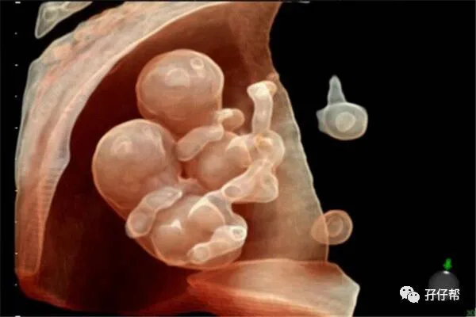

⬆⬆关注孖仔帮，与您分享双胞胎育儿经⬆⬆
文|圆圈妈 一个文思如尿崩的双胎妈妈
图|来自网络
【01】两胎儿的发育情况
孕23周的胎宝宝有茄子那么长了，从头部到臀部长约25.4CM，约415G▼
孕23周的双胞胎胎儿发育图▼：
B超孕23周的双胞胎胎儿影像图▼：
【02】圆圈妈的孕期回忆录
Ⅰ 进入孕23周，四维大排畸我来啦！
4月22日，北京大学深圳医院，四维大排畸，这是双胎妊娠的第四次产检，终于被我盼星星盼月亮盼来了，据说这是双胎妊娠一次很重要的产检。
四维大排畸是双胎妊娠的一个大坎，若两胎儿到这个阶段依然健康发育无异常，等于双胎妊娠成功了一大半。
这是我双胎孕期第三次做B超，连我自己都有点怀疑我的B超是不是做得太少了。
距离上一次的彩超还是在孕12周的NT，已经过去了整整11周，期间还经历了孕16周和孕20周的常规产检，我居然稀里糊涂地混过去了。
Ⅱ 排队等待四维
在分诊台排队取号时发生了点小插曲，我一直以为我们约的是四维彩超，两个月前预约单上也确实写了中孕期胎儿结构筛查（四维），可不知为何今日却被告知只能做三维。
最后苦等了半个多小时后得到护士小姐姐的答复，因为是双胎，已经安排了主任级别的超声科医生过来给我胎儿会诊，据说那是最高级别的待遇了，只是需要稍微等待下。
结果这个“稍微等待”的意思就是，从我们下午2点半一直等到5点钟，叫号系统一直显示，排在我前面只有2人，心想才等两个人而已，怎么也用不着3个小时吧！
尤其是这次的胎儿结构筛查，我特别重视，特别迫不及待。
深圳的四月天，闷热极了。
3个小时的等待，我仿佛经历了好几个改朝换代，我紧张到手心手背都是汗，不停地在走廊外踱步，徘徊，深呼吸...
心里很慌乱，生怕查出个缺胳膊少腿，担心他们生长发育不一致，害怕他们在里面打架抢地盘...隔了两个月没有做B超，我才发现我的“假装淡定”早被撕破脸了！
圆圈爸试图跟我聊天缓解我的不适，可是我已经急在嗓子眼上，语无伦次了。
最后圆圈爸使出绝招要告诉我一个秘密，四维彩超花了1193块大洋。
可把我心疼的呀，这钱可以买4罐港版美素了，我终于从紧张的情绪中恢复一点理智，与圆圈爸吐槽，怀双胎真烧钱，做个B超还双倍钱…
☞☞TIPS☜☜：四维和三维，别傻傻分不清！三维，四维两者都可以作为胎儿结构检查的重要手段。
四维多了动态画面，可以更直观清晰地看到胎儿的五官结构。
一般三甲医院只安排做三维，甚至有医院不做双胎妈妈的三维或四维，但不管三维四维多么清晰，都是以二维的图像为主的。
也就是说，三维四维只是在胎儿表面成像有直观的显像，但没有增加任何诊断价值。
这么说，你是不是体会到了不给你做四维的医生的用心良苦了呢？
因此，好奇心很重的双胎宝爸宝妈，做三维就足够了，主要是帮助你们看下胎儿的大概轮廓，提前了解下两宝宝是不是长得一样，像爸爸多一点还是像妈妈多一点，顺便欣赏下两宝宝在肚子里各种卖萌表情秀。
Ⅲ 胎儿会诊
庆幸两胎儿在胎儿会诊期间非常配合，医生探头去哪里就跟到哪里，全程0障碍，该看的都看到了，不到40分钟就结束了，相当顺利！让我如漫步云端，受宠若惊！
早听说，做胎儿结构筛查很讲究运气，若是遇到胎儿不配合，恐怕要折腾多次，直到看清楚为止。
所幸，我的运气爆棚，医生大赞他们很配合，情不自禁吐槽刚刚那位单胎妈妈，因胎儿不配合，已经是第三次来做三维了，折腾了大半天才勉强完成。
三维结果显示两胎儿的发育正常，阿弥陀佛！并没有检查出四肢不全，脏器缺失的情况。
羊水分布均匀，两胎儿的孕周跟实际相符，他们各自的体重只相差一天。
B超单上有显示重量，这是我第一次看到他们在子宫内的预估体重，F1胎儿约595G，F2胎儿524G。
才1斤多的他们是有多小啊！可能只有一瓶550ML的怡宝矿泉水那么大吧！
想象着他们微闭着眼睛，彼此依偎着对方，静静地蜷缩在子宫内的样子，我的心里甜甜的，涩涩的...难道这就是传说中的母性情怀在挥发扩散吗？
而最让我感到欣慰的是，他们的体重相差不大，这意味着我们娘离TTTs还远着呢！
虽然胎盘还是处于低置状态，但医生也没说啥，我也没有多问，于我而言，只要不被疑似双胎输血综合征，让我处于什么状态都可以！
☞☞TIPS☜☜：中孕期的胎儿结构筛查，早点做！
孕23周的你，可能会做四维大排畸或者已经做了。不管怎样，四维大排畸都尽量在23周之前搞定，不能超过24周。
因为子宫内的空间本来就小，孕周越大，给胎儿做结构筛查就越困难。
据了解，很多医生宁愿做10个单胎孕妇也不想接1个双胎孕妇的B超任务。可见，医生得有多头疼我们这些双胎妈妈啊！
因此，为了娘三，也为了配合医生的工作， 请注意四维大排畸的最佳时间18—24周之间，怀上双胞胎的你，22周左右做最合适。
此外，若你是在人满为患，孕妇扎推的一线城市，四维彩超可能会很难预约，很多医院只接受建档时孕妇的预约，插队者免谈！
因此，早点建档，早点约四维or三维吧，绝对错不了！要是阴差阳错误了时机，那只能高价去私立医院了。
Ⅳ 第一次看到两胎儿的立体照片
我和圆圈爸在莲花山公园的石凳上呆坐了很久，拿着B超单看了又看！激动得词穷了！
两个人你看看我，我看看你，再看看单子上的两个崽崽的照片！傻笑着！
这是我和圆圈爸第一次因为我怀上双胞胎而发自内心最灿烂，最轻松的笑容！
早孕期，孕吐，笑不出来！
中孕期，婆媳关系+负面情绪，笑不出来！
这会儿，看到三维报告单上那模糊的两个小人样，抛开所有烦恼，我们默契地相视而笑！
谢谢里面那两只尚未谋面可是又跟我下半辈子息息相关的崽崽，我和圆圈爸好像瞬间长大了不少，好似由内而外地成熟了！
我再也不是懵懂无知的萌少女，他也不是年少轻狂的少年郎。
我们即将是两个双胞胎宝宝的爸爸妈妈。
苍天啊，我笑完之后居然哭得一塌糊涂！为自己一路走来的坚强，也为自己后面更加艰难的孕后期提前悲壮地感慨下….
回去的路上无比轻松，全然没有之前那种神经紧绷的感觉，得知里面那两只正在健健康康地发育着，最重要的是同步发育着，我开心极了，满满的正能量！
心里思量着，都快六个月了，一切正常，TTTS 的几率应该不大了吧！
就酱…我的双胎妊娠第四次产检，顺利过关！
☞未完待续☜
上期推文:
连载（一）|圆圈妈双胞胎怀孕过程第4周
连载（二）|圆圈妈双胞胎怀孕过程第5周
连载（三）|圆圈妈双胞胎怀孕过程第6周
连载（四）|圆圈妈双胞胎怀孕过程第7周
连载（五）|圆圈妈双胞胎怀孕过程第8周
连载（六）|圆圈妈双胞胎怀孕过程第9周
连载（七）|圆圈妈双胞胎怀孕过程第10周
连载（八）|圆圈妈双胞胎怀孕过程第11周
连载（九）|圆圈妈双胞胎怀孕过程第12周
连载（十）|圆圈妈双胞胎怀孕过程第13周
连载（十一）|圆圈妈双胞胎怀孕过程第14周
连载（十二）|圆圈妈双胞胎怀孕过程第15周
连载（十三）|圆圈妈双胞胎怀孕过程第16周
连载（十四）|圆圈妈双胞胎怀孕过程第17周
连载（十五）|圆圈妈双胞胎怀孕过程第18周
连载（十六）|圆圈妈双胞胎怀孕过程第19周
连载（十七）|圆圈妈双胞胎怀孕过程第20周
连载（十八）|圆圈妈双胞胎怀孕过程第21周
连载（十九）|圆圈妈双胞胎怀孕过程第22周
下期预告：
连载（二十一）|圆圈妈双胞胎怀孕过程第24周
重磅互动
#你希望写什么育儿经验干货#
评论区聊一聊
随便提，万一下篇就写了呢？
关于这个号
谢谢关注！
我是圆圈妈
85后，全职妈妈
家有孖仔两枚，圆圈&圈圈
双胞胎育儿公众号：孖仔帮
ID:twinsbang
旨意分享双胞胎育儿经验帮助双胞胎家庭
有经验可循
有组织可靠
希望我的经验对您有所启发
期待与您一起共享双胞胎育儿经
孖仔帮目前有5个双胞胎微信社群
孕期群，喂养群，闲置群
爸爸群，教育群
如需入交流群
关注订阅公众号【孖仔帮】
添加微信号sgguy-com
或扫描下方二维码⬇⬇
申请入群
入群暗号：双胎宝妈/宝爸，孕期/已生
往期回顾
105：同卵双胞胎的天敌--双胞胎输血综合征
106：官宣：双绒双羊，单绒双羊，单绒单羊傻傻分不清？一篇消除你所有疑问
215：双胎子宫日记系列|（下）你看不看？双胞胎妈妈直播剖腹产全过程
306：真人示范！双胞胎妈妈高难度喂母乳技巧
312：为出生就进NICU的双胞胎新生儿，我必须告诉你这5个通关秘籍
407：嘿！双胞胎孩子的亲子阅读攻略，要来一份吗（1--2岁阶段）
605：看过这份最简单的双胞胎宝宝用品囤货清单，其他的都是将就
608：听说...你在找双胞胎育儿神器，这事儿我熟！
723：双胎妈妈，为什么我不建议你这样坐月子...
⬇⬇长按下方二维码，关注孖仔帮
回复文章编号数字即可阅读
更多养育双胞胎知识，尽在双胞胎育儿网站
请猛戳 "阅读原文"
或长按下方二维码直达⬇⬇



